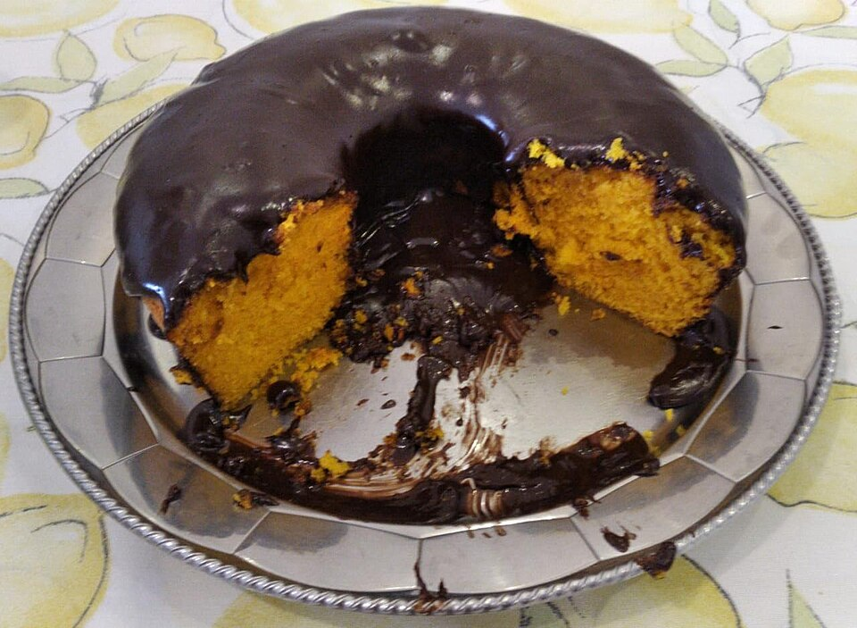

Doces · Tortas e bolos
Bolo de cenoura

Ingredientes
- 3 cenouras médias (cerca de 300 g), descascadas e picadas
- 3 ovos
- 1 xícara (chá) de óleo
- 2 xícaras (chá) de açúcar
- 2 xícaras (chá) de farinha de trigo
- 1 colher (sopa) de fermento em pó
Cobertura (opcional)
- 4 colheres (sopa) de chocolate em pó
- 2 colheres (sopa) de manteiga
- 4 colheres (sopa) de açúcar
- 4 colheres (sopa) de leite
Modo de preparo
- Preaqueça o forno a 180 °C e unte uma forma média com manteiga e farinha.
- No liquidificador, bata as cenouras, os ovos e o óleo até ficar homogêneo.
- Despeje em uma tigela, acrescente o açúcar e misture. Incorporar a farinha aos poucos e, por último, o fermento.
- Leve ao forno por cerca de 40 minutos, ou até o palito sair limpo.
- Para a cobertura: em uma panela, junte todos os ingredientes e cozinhe em fogo baixo até engrossar. Espalhe sobre o bolo ainda quente.
Observação: receita de exemplo do livro — substitua pelas fotos das receitas da família.